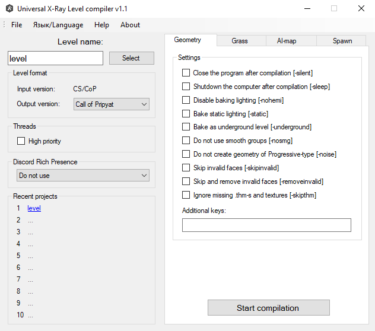

- Program Developer:
- Compiler edits and build:
- Acknowledgements:
- The version described in the article: 1.3
- Ap-pro forum topic
Universal level compiler that supports the compilation format for games of all series and has many keys to compile

- Geometry compiler (SoC, CS, CoP)
- Grass compiler (SoC, CS, CoP)
- AI grid compiler (SoC, CS, CoP)
- Spawn Compiler (SoC, CS, CoP)
- Support for x64
- Support for major games in the series (except for spawn formats)
- All compilers united in one application
- Interface completely rewritten in WinForms
- Added compiler menu, where you can choose a project level, set certain settings and run the compilation
- A system for saving and loading settings of recent projects has been added
- The number of threads created is no longer fixed, but depends on the number of processor cores
- Migration to DirectXTex library to replace FreeImage and nvDXT now obsolete
- Removed rendering of RGB and Sun lighting components, leaving only Hemi
- Some phases of compilation and code parsing of third-party libraries were made
- Integrated Discord Rich Presence to be able to monitor the status of compilation on a remote PC
- Added an option to automatically shutdown the PC after compilation
- Implemented a progress bar in the taskbar to display the current compilation status when minimized
- Added keys for the accelerated compilation of levels for testing purposes.
- Added experimental switches to disable some compilation phases and bypass KKS parameters
- Added major changes to past compilers
- Expanded information output on some bugs
- Fixed some crashes of the original compilers
It requires Microsoft Visual C++ 2017 Redistributable x64 installed.
The files must be moved to the root folder of the SDK
| Button | Description |
|---|
| Recent Projects | Recent Projects |
| Exit | Exit |
| Button | Description |
|---|
| English | English language |
| Русский | Russian language |
| Button | Description |
|---|
| Help | Shows helpful information |
| Button | Description |
|---|
| About | About the program |
| Button | Description |
|---|
| Select | Selects the level for compilation |
- Input Version: (Input version of the level format)
- Output Version: (Output version of the level format)
| Checkboxes | Description |
|---|
| High Priority | Enables high priority |
- Do not use
- Show compilation status only
- Show level name and status
| Key | Description |
|---|
| -silent | Close the program after compilation |
| -sleep | Shutdown the computer after compilation |
| -nohemi | Disable baking lighting |
| -static | Bake static lighting |
| -underground | Bake as underground level |
| -nosmg | Do not use smooth groups |
| -noise | Do not create geometry of Progressive-type |
| -skipinvalid | Skip invalid faces |
| -removeinvalid | Skip and remove invalid faces |
| -skipthm | Ignore missing thm-s and textures |
| Key | Description |
|---|
| -silent | Close the program after compilation |
| -sleep | Shutdown the computer after compilation |
| -nohemi | Disable baking lighting |
| -static | Bake static lighting |
| -skipthm | Ignore missing thm-s and textures |
Build Ai-Map
| Key | Description |
|---|
| -draft | Do not calculate covers |
| -skipthm | Ignore missing thm-s and textures |
Check Ai-Map
| Key | Description |
|---|
| -noverbose | Do not show info about single nodes |
| Key | Description |
|---|
| -no_separator_check | Disable some conflicts |
| Buttons | Description |
|---|
| Add | |
| Remove | |
| Clear | |
| Checkboxes | Description |
|---|
| by default | Renames the .spawn file by default (name chosen from the folder name) |
| Key | Description |
|---|
| -tex_rgba | do not use compression for stored textures |
| -tex_bc7 | use BC7 compression for stored textures (format is only supported on DX11) |
| -cform | export only collision level |
| -nocform | skips the creation of level.cform |
| -notess | do not tessellate the geometry |
| -noweld | disable small triangles welding |
| -nomerge | skip the Merging geometry stage |
| -noimpl | don't bake lighting for terrain |
| -noresize | don't resize bigger textures to 1024x1024 |
| -nostrip | disable geometry optimization and streamlining |
| -dx_opt | turn on D3DX optimizer geometry optimization instead of NvTriStrip |
| -gi | turn on the Radiosity phase |
| -no_mt_mu | don't run the lighting calculation for Multiple Usage objects in parallel with the main compilation |
| -high | higher priority for the threads |
| -saveobj_base | save all level geometry in obj files (basic sweep) |
| -saveobj_lmap | save all the level geometry to the obj files (lightmap sweep) |
| -saveobj_cform | save all the collision level in the obj file |
| -qual_draft | set the quality of the scene in Draft (does not affect the exposed shaders) |
| -qual_high | set the quality of the scene to High (does not affect the exposed shaders) |
| -ppm (number) | set the quality of lightmaps instead of the value in KFK |
| -weld_dist (number) | set Weld distance instead of the KFD value |
| -hemi_bias (number) | set the offset of the beam position when baking hemi (default: 0.1, original: 0.001) |
| -insert_graph | enable adding graphs to common spawn when building a SoC Level (Key for SoC only) |
| Key | Description |
|---|
| -help | call help with a list of all startup keys |
| -t (number) | set number of threads for multithreaded operations (does not work with the -tbb switch) |
| -fsltx (file_name) | use your ltx instead of fsgame.ltx |
| -log_name (file_name) | create a log file with this name. Useful for compiling locations by queue |
| -tbb | use TBB multithreading (not recommended) |